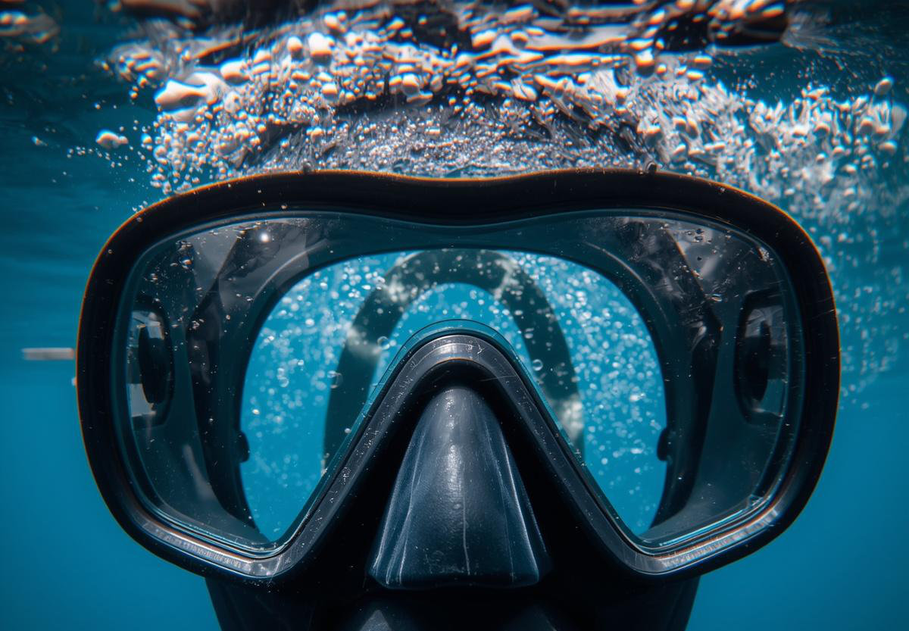
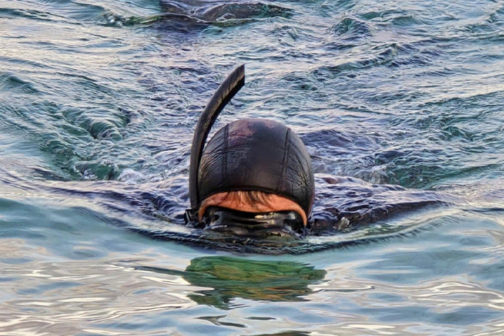
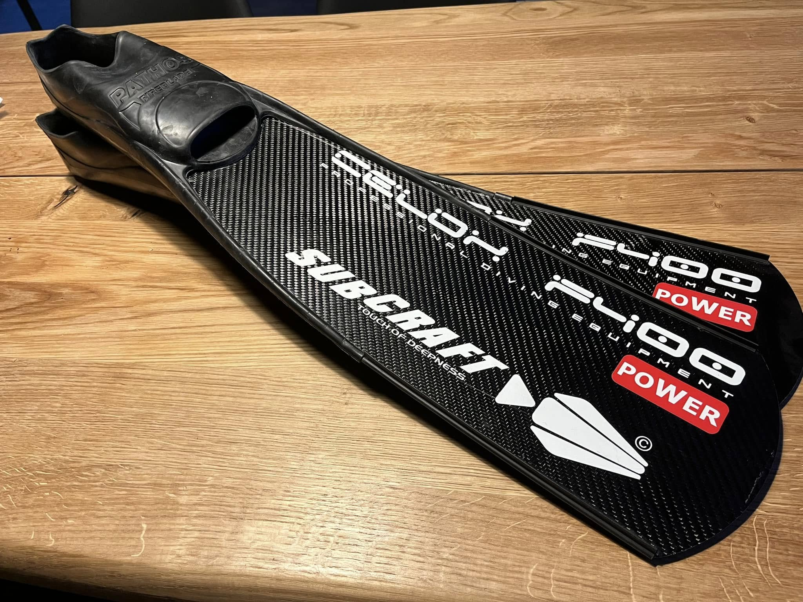
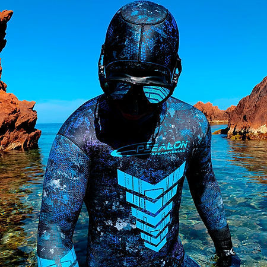

Za siguran i učinkovit podvodni ribolov potrebna je osnovna oprema koja omogućuje udobno ronjenje, dobru vidljivost i sigurnost u vodi.
Maska omogućuje jasan pogled pod vodom. Treba dobro prijanjati uz lice i imati kvalitetno staklo.

Koristi se za disanje na površini bez podizanja glave iz vode. Jednostavna, lagana i praktična.

Peraje omogućuju brže i lakše kretanje pod vodom. Za podvodni ribolov najčešće se koriste duže peraje.

Štiti od hladnoće i ogrebotina. Debljina ovisi o temperaturi mora (3 mm, 5 mm, 7 mm).

Pomaže u postizanju neutralne plovnosti. Olova se prilagođavaju težini ronioca i debljini odijela.
Osnovni alat za lov. Postoje gumene, zračne, roller i invert puške.
Koristi se za sigurnost, oslobađanje iz mreža ili konopa te za završavanje ulova.
Obavezna radi sigurnosti. Označava ronioca na površini i služi za odmor ili nošenje opreme.